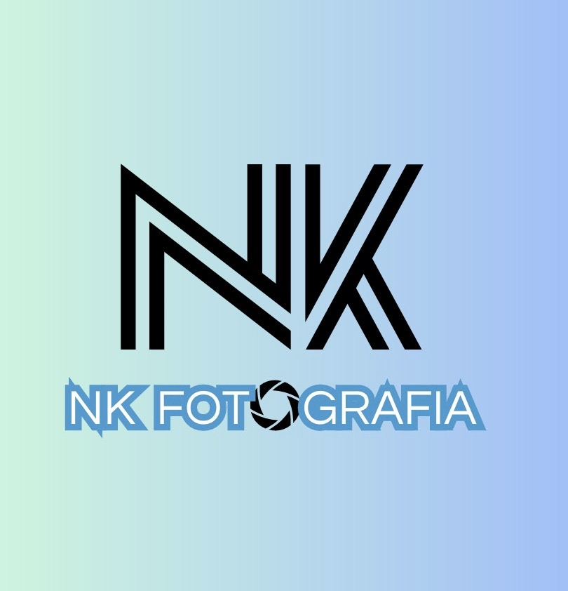

1. Monograma redesenhado em vetor
O logo existia só em JPEG. O monograma foi medido pixel a pixel e redesenhado com 8 traços de espessura constante (20 unidades), o que permite animar o “desenho das linhas”. À esquerda, o original; à direita, o SVG.

assets/brand/nk-monograma.svgUsos
Animação de abertura (linhas se desenhando), rodapé, cabeçalho, marca em imagens de compartilhamento.
2. Paleta
Cores amostradas do arquivo do logo. O azul do contorno não passa no contraste AA para texto pequeno sobre branco: use-o em contornos, ícones, linhas e títulos grandes. Para links e texto, use o azul escuro.
linear-gradient(90deg, #CEF3E1, #B9DAEB, #A2BFF7) — assinatura: hero, aberturas de seção e rodapé. As fotos vivem sobre preto ou papel; o degradê emoldura, nunca compete.
3. Tipografia
Lexend
Títulos e botões, 600–800. Geometria larga e arredondada, a mais próxima do wordmark.
Inter
Texto corrido, 400–700. Ótima leitura no celular.
As duas fontes ficam hospedadas no próprio site (assets/fonts), sem depender do Google Fonts.
4. Os três motivos gráficos
Linhas paralelas
Três traços no ângulo exato da perna do N (≈52°). Divisores, sobretítulos, sublinhado de menu que “duplica” quando ativo: Portfólio
Diafragma
Transição do hero (a foto abre como um disparo), carregamento das galerias, cursor sobre as fotos e favicon.
Carimbo
Shows
Texto branco com contorno azul deslocado. Só em títulos grandes das páginas de evento.
NK FOTGRAFIA
5. Tom de voz
Próximo, direto, paulistano, sem exagero. Primeira pessoa (“eu fotografo”, “eu levo”). Gancho recorrente: “Não deixe pra última hora.” Nada inventado: nenhum preço, cliente, depoimento ou número além de “+3 anos”.
Arquivos
nk-monograma.svg · nk-monograma-branco.svg · nk-monograma-branco.png · diafragma.svg · divisor-linhas.svg · cursor-diafragma.svg · ../../favicon.svg